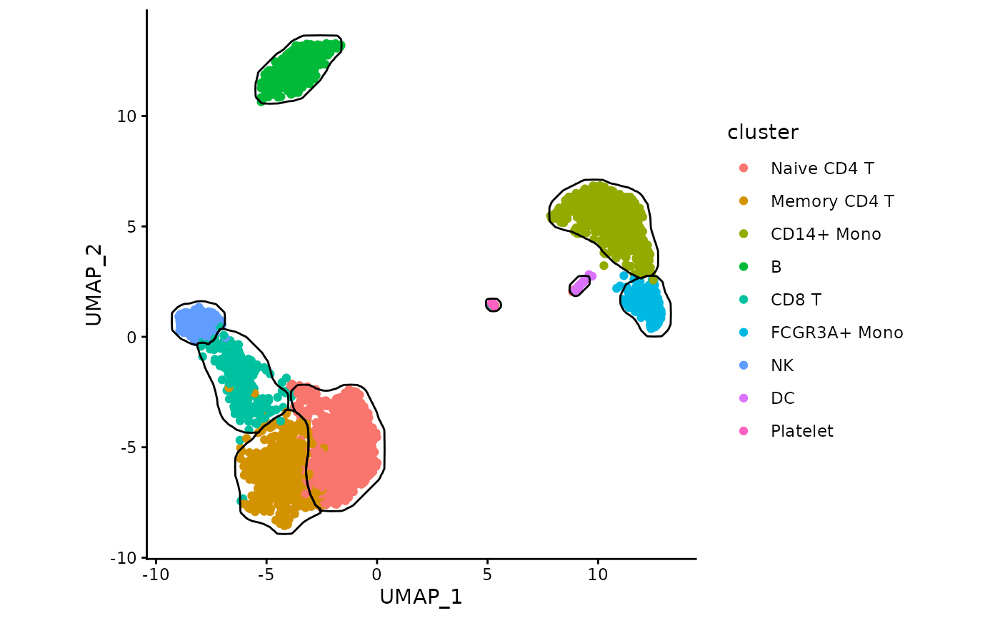

Generate mask for clusters on 2D dimensional reduction plots
Source:R/generateMask.R
generateMask.RdInternally the function rasterizes and smoothes the density plots.
Usage
generateMask(
dims,
clusters,
gridSize = 200,
expand = 0.005,
minDensity = lifecycle::deprecated(),
smoothSigma = NA,
minSize = 10,
kernel = lifecycle::deprecated(),
type = lifecycle::deprecated()
)Arguments
- dims
matrix of point coordinates. Rows are points, columns are dimensions. Only the first two columns are used.
- clusters
vector of cluster annotations. Should be the same length as the number of rows in
dims.- gridSize
target width and height of the raster used internally
- expand
distance used to expand borders, represented as a fraction of sqrt(width*height). Default: 1/200.
- minDensity
Deprecated. Doesn't do anything.
- smoothSigma
Deprecated. Parameter controlling smoothing and joining close cells into groups, represented as a fraction of sqrt(width*height). Increasing this parameter can help dealing with sparse regions.
- minSize
Groups of less than
minSizepoints are ignored, unless it is the only group for a cluster- kernel
Deprecated. Doesn't do anything.
- type
Deprecated. Doesn't do anything.
Value
data.table with points representing the mask borders.
Each individual border line corresponds to a single level of group column.
Cluster assignment is in cluster column.
Examples
data("exampleMascarade")
maskTable <- generateMask(dims=exampleMascarade$dims,
clusters=exampleMascarade$clusters)
data <- data.frame(exampleMascarade$dims,
cluster=exampleMascarade$clusters,
exampleMascarade$features)
library(ggplot2)
ggplot(data, aes(x=UMAP_1, y=UMAP_2)) +
geom_point(aes(color=cluster)) +
geom_path(data=maskTable, aes(group=group)) +
coord_fixed() +
theme_classic()
